import pandas as pd
import numpy as np
import matplotlib.pyplot as plt
import seaborn as sns
from sklearn.model_selection import train_test_split
from sklearn import svm
from sklearn.tree import DecisionTreeClassifier
from sklearn.svm import SVC
from sklearn.neural_network import MLPClassifier
from sklearn.metrics import accuracy_score
from sklearn.ensemble import RandomForestClassifier
from sklearn.metrics import confusion_matrix, classification_report
from sklearn.preprocessing import StandardScaler, LabelEncoder
from sklearn.utils import resample1 Background
In this analysis, I use data from the UCI machine learning repository regarding the quality of red wine. The objective is to develop machine learning algorithms that can reasonably predict the wine rating based on a set of variables/features. Specifically, we train 3 machine learning models.
- Support vector machines (SVM) (Pisner and Schnyer, 2020).
- Random forest model (Parmar, Katariya and Patel, 2019).
- Neural network model (Hancock and Khoshgoftaar, 2020).
Read More of my Work
Please visit my rpubs site to see more data projects. Alternatively, copy and paste the link https://www.rpubs.com/Karuitha into your browser.
My data visualizations projects are available in my Tableau Public profile page or copy and paste the link https://public.tableau.com/app/profile/john.karuitha.
My Shiny web apps are available on this site. You can copy-paste this web address instead https://karuitha.shinyapps.io/.
Tools Utilized & Skills Applied
Python, sklearn, matplotlib, pandas, seaborn, numpy, Data Science, Machine Learning
The data that we utilise in this analysis is available on this link. For the purpose of this analysis, I use data for red wine. 1
I start by downloading and reading the dataset.
# help(pd.read_csv)
wine = pd.read_csv("winequality-red.csv", sep = ";")
wine.head()/home/karuitha/anaconda3/envs/py3108/lib/python3.10/site-packages/IPython/core/formatters.py:345: FutureWarning:
In future versions `DataFrame.to_latex` is expected to utilise the base implementation of `Styler.to_latex` for formatting and rendering. The arguments signature may therefore change. It is recommended instead to use `DataFrame.style.to_latex` which also contains additional functionality.
| fixed acidity | volatile acidity | citric acid | residual sugar | chlorides | free sulfur dioxide | total sulfur dioxide | density | pH | sulphates | alcohol | quality | |
|---|---|---|---|---|---|---|---|---|---|---|---|---|
| 0 | 7.4 | 0.70 | 0.00 | 1.9 | 0.076 | 11.0 | 34.0 | 0.9978 | 3.51 | 0.56 | 9.4 | 5 |
| 1 | 7.8 | 0.88 | 0.00 | 2.6 | 0.098 | 25.0 | 67.0 | 0.9968 | 3.20 | 0.68 | 9.8 | 5 |
| 2 | 7.8 | 0.76 | 0.04 | 2.3 | 0.092 | 15.0 | 54.0 | 0.9970 | 3.26 | 0.65 | 9.8 | 5 |
| 3 | 11.2 | 0.28 | 0.56 | 1.9 | 0.075 | 17.0 | 60.0 | 0.9980 | 3.16 | 0.58 | 9.8 | 6 |
| 4 | 7.4 | 0.70 | 0.00 | 1.9 | 0.076 | 11.0 | 34.0 | 0.9978 | 3.51 | 0.56 | 9.4 | 5 |
Next, we look at the number of rows and columns in the dataset.
wine.shape(1599, 12)wine.info()<class 'pandas.core.frame.DataFrame'>
RangeIndex: 1599 entries, 0 to 1598
Data columns (total 12 columns):
# Column Non-Null Count Dtype
--- ------ -------------- -----
0 fixed acidity 1599 non-null float64
1 volatile acidity 1599 non-null float64
2 citric acid 1599 non-null float64
3 residual sugar 1599 non-null float64
4 chlorides 1599 non-null float64
5 free sulfur dioxide 1599 non-null float64
6 total sulfur dioxide 1599 non-null float64
7 density 1599 non-null float64
8 pH 1599 non-null float64
9 sulphates 1599 non-null float64
10 alcohol 1599 non-null float64
11 quality 1599 non-null int64
dtypes: float64(11), int64(1)
memory usage: 150.0 KB2 Explore the Data
In this section, we examine the data. First, we list the variables.
The input variables (based on physicochemical tests):
- fixed acidity
- volatile acidity
- citric acid
- residual sugar
- chlorides
- free sulfur dioxide
- total sulfur dioxide
- density
- pH
- sulphates
- alcohol
The output variable (based on sensory data):
- quality (score between 0 and 10)
We then check for missing and duplicate values. We see that there are no missing values.
wine.isna().sum()/home/karuitha/anaconda3/envs/py3108/lib/python3.10/site-packages/IPython/core/formatters.py:345: FutureWarning:
In future versions `DataFrame.to_latex` is expected to utilise the base implementation of `Styler.to_latex` for formatting and rendering. The arguments signature may therefore change. It is recommended instead to use `DataFrame.style.to_latex` which also contains additional functionality.
However, there are 240 duplicated observations that we drop.
wine.duplicated().sum()240wine = wine.drop_duplicates()Next, I do feature engineering by converting the target variable quality to a binary variable. As it stands, the wine is in the following categories.
wine["quality"].unique()array([5, 6, 7, 4, 8, 3])Specifically, wines below a rating of () are bad quality while those equal to or above () are good quality wines. Note that this is a personal choice and hence subjective.
Note that after this update, we only have 2 categories for wine quality, 0 and 1.
wine["quality"] = [1 if i >= 6.5 else 0 for i in wine["quality"]]
wine.head()/home/karuitha/anaconda3/envs/py3108/lib/python3.10/site-packages/IPython/core/formatters.py:345: FutureWarning:
In future versions `DataFrame.to_latex` is expected to utilise the base implementation of `Styler.to_latex` for formatting and rendering. The arguments signature may therefore change. It is recommended instead to use `DataFrame.style.to_latex` which also contains additional functionality.
| fixed acidity | volatile acidity | citric acid | residual sugar | chlorides | free sulfur dioxide | total sulfur dioxide | density | pH | sulphates | alcohol | quality | |
|---|---|---|---|---|---|---|---|---|---|---|---|---|
| 0 | 7.4 | 0.70 | 0.00 | 1.9 | 0.076 | 11.0 | 34.0 | 0.9978 | 3.51 | 0.56 | 9.4 | 0 |
| 1 | 7.8 | 0.88 | 0.00 | 2.6 | 0.098 | 25.0 | 67.0 | 0.9968 | 3.20 | 0.68 | 9.8 | 0 |
| 2 | 7.8 | 0.76 | 0.04 | 2.3 | 0.092 | 15.0 | 54.0 | 0.9970 | 3.26 | 0.65 | 9.8 | 0 |
| 3 | 11.2 | 0.28 | 0.56 | 1.9 | 0.075 | 17.0 | 60.0 | 0.9980 | 3.16 | 0.58 | 9.8 | 0 |
| 5 | 7.4 | 0.66 | 0.00 | 1.8 | 0.075 | 13.0 | 40.0 | 0.9978 | 3.51 | 0.56 | 9.4 | 0 |
3 Data Visualization
In this section, I visualize the data. To start with, I make a histogram for indepedent variables/ features.
# plt.subplots(4, 3, figsize=(12, 8))
for variable in wine.columns[:-1]:
plt.hist(wine[wine["quality"] == 1][variable], color = "purple", alpha = 0.5, density = True)
plt.hist(wine[wine["quality"] == 0][variable], color = "green", alpha = 0.5, density = True)
plt.title(variable)
plt.xlabel(variable)
plt.ylabel("Probability")
plt.legend()
plt.show()No artists with labels found to put in legend. Note that artists whose label start with an underscore are ignored when legend() is called with no argument.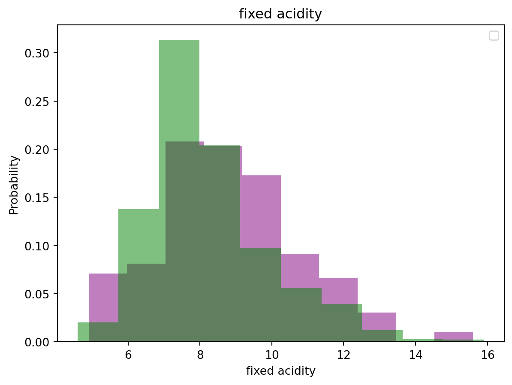
No artists with labels found to put in legend. Note that artists whose label start with an underscore are ignored when legend() is called with no argument.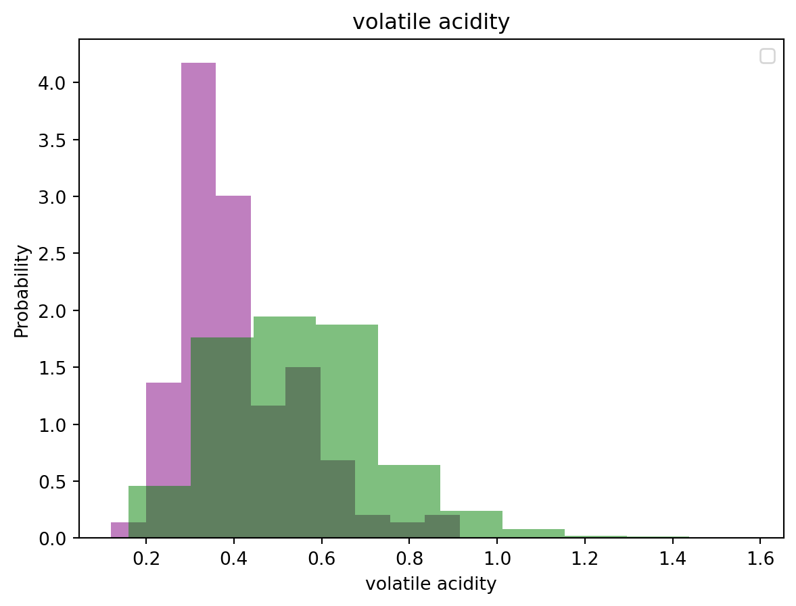
No artists with labels found to put in legend. Note that artists whose label start with an underscore are ignored when legend() is called with no argument.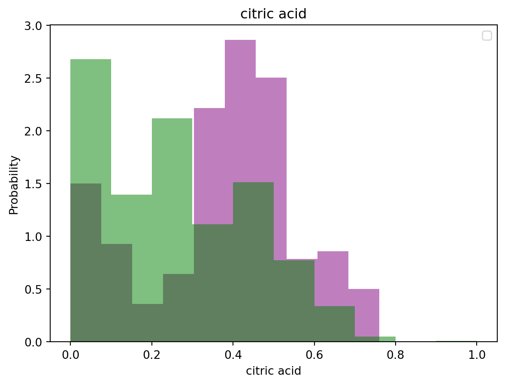
No artists with labels found to put in legend. Note that artists whose label start with an underscore are ignored when legend() is called with no argument.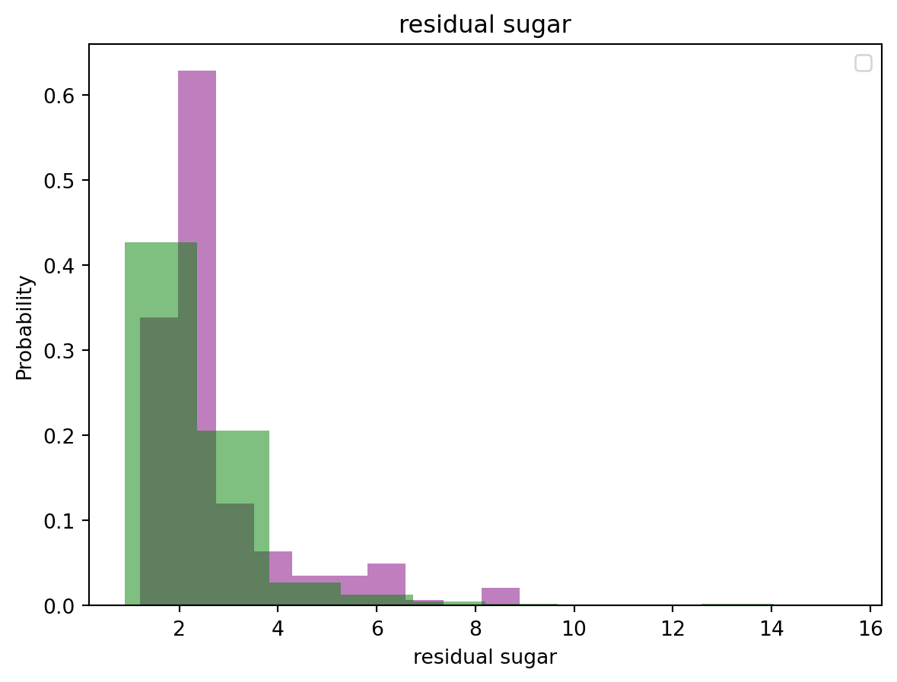
No artists with labels found to put in legend. Note that artists whose label start with an underscore are ignored when legend() is called with no argument.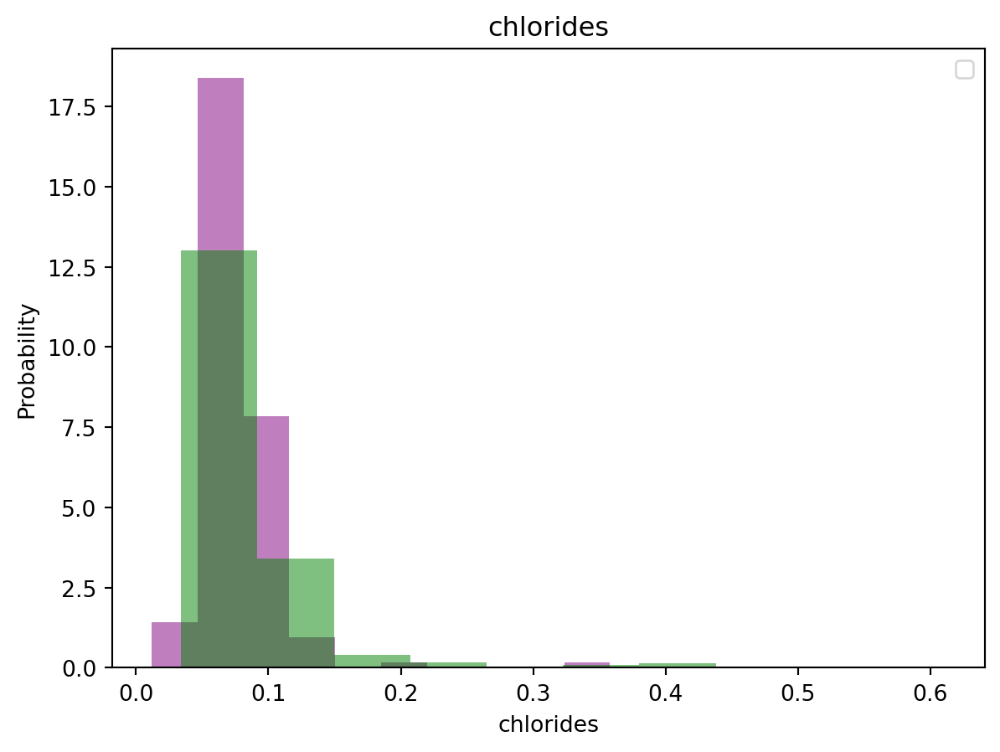
No artists with labels found to put in legend. Note that artists whose label start with an underscore are ignored when legend() is called with no argument.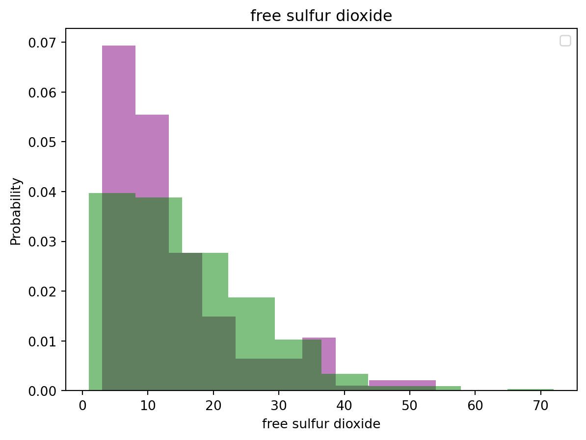
No artists with labels found to put in legend. Note that artists whose label start with an underscore are ignored when legend() is called with no argument.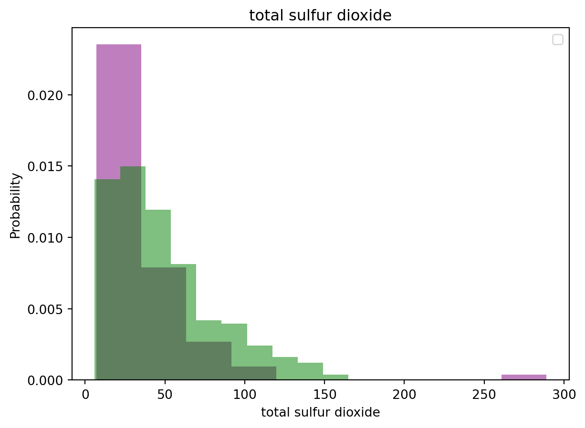
No artists with labels found to put in legend. Note that artists whose label start with an underscore are ignored when legend() is called with no argument.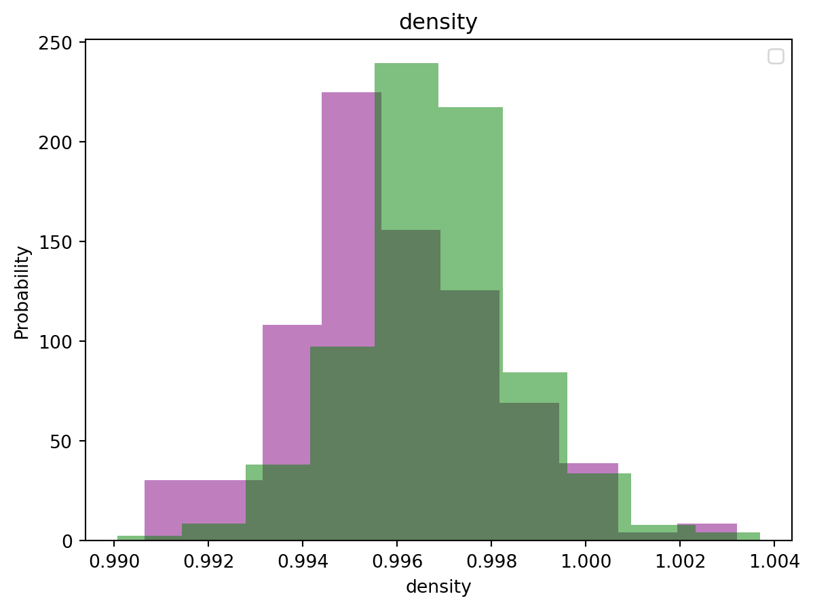
No artists with labels found to put in legend. Note that artists whose label start with an underscore are ignored when legend() is called with no argument.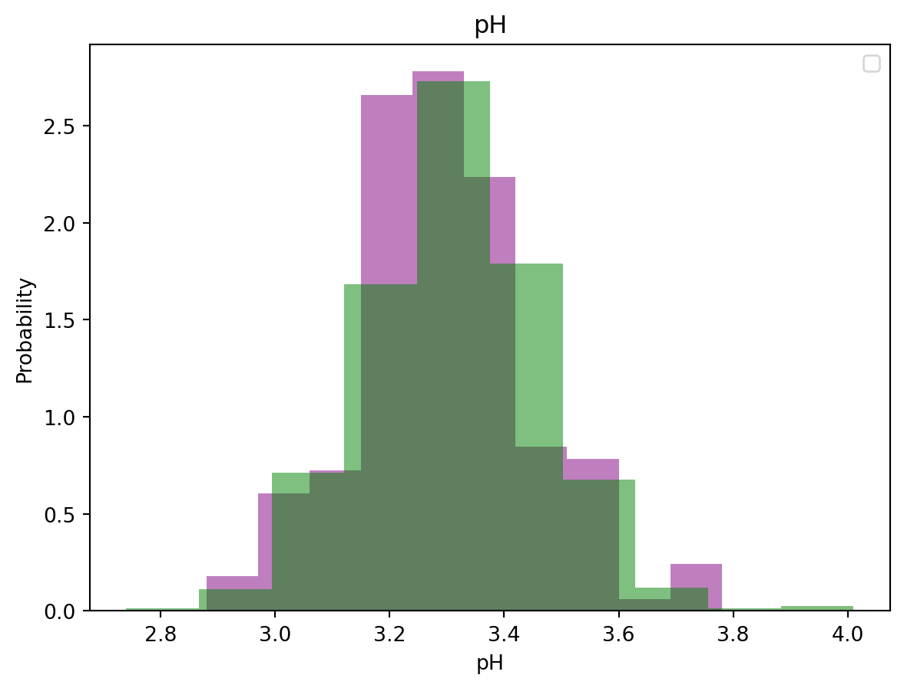
No artists with labels found to put in legend. Note that artists whose label start with an underscore are ignored when legend() is called with no argument.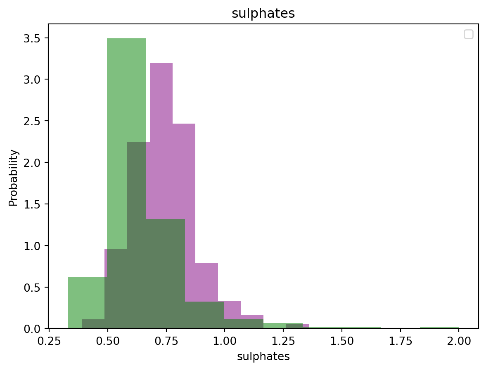
No artists with labels found to put in legend. Note that artists whose label start with an underscore are ignored when legend() is called with no argument.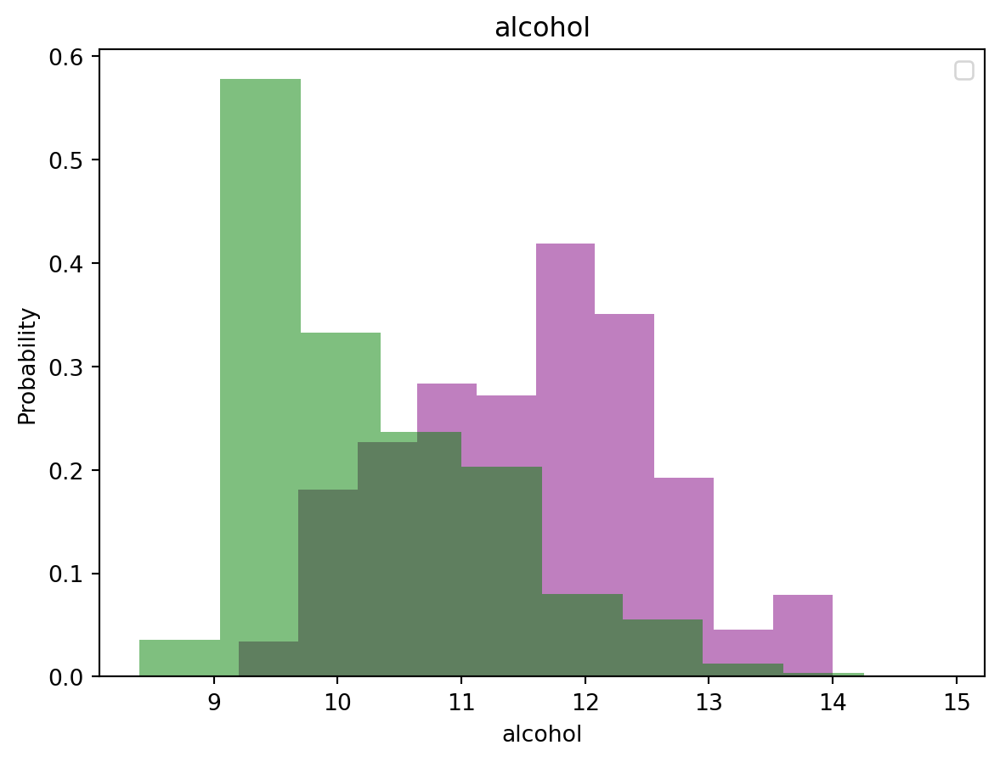
Overall, it appears like Alcohol content is a great disciminator for the quality of wines although the other variables are also useful.
3.1 Evaluating Class Balance/ Imbalance
In this section, we evaluate the class balance in the dataset. As shown below, there is a high degree of the class balance with 217 good wines in the dataset against 1382 bad wines. This level of the class balance could affect the effeciency of the machine learning models. One approach is to upsample the underrepresented class or downsample the overrepresented class. This approach is more cost efficient. The alternative approach is is to get more data for the underrepresented class.
wine["quality"].value_counts()/home/karuitha/anaconda3/envs/py3108/lib/python3.10/site-packages/IPython/core/formatters.py:345: FutureWarning:
In future versions `DataFrame.to_latex` is expected to utilise the base implementation of `Styler.to_latex` for formatting and rendering. The arguments signature may therefore change. It is recommended instead to use `DataFrame.style.to_latex` which also contains additional functionality.
# help(sns.countplot)
sns.countplot(wine["quality"], palette = "dark")<AxesSubplot: ylabel='count'>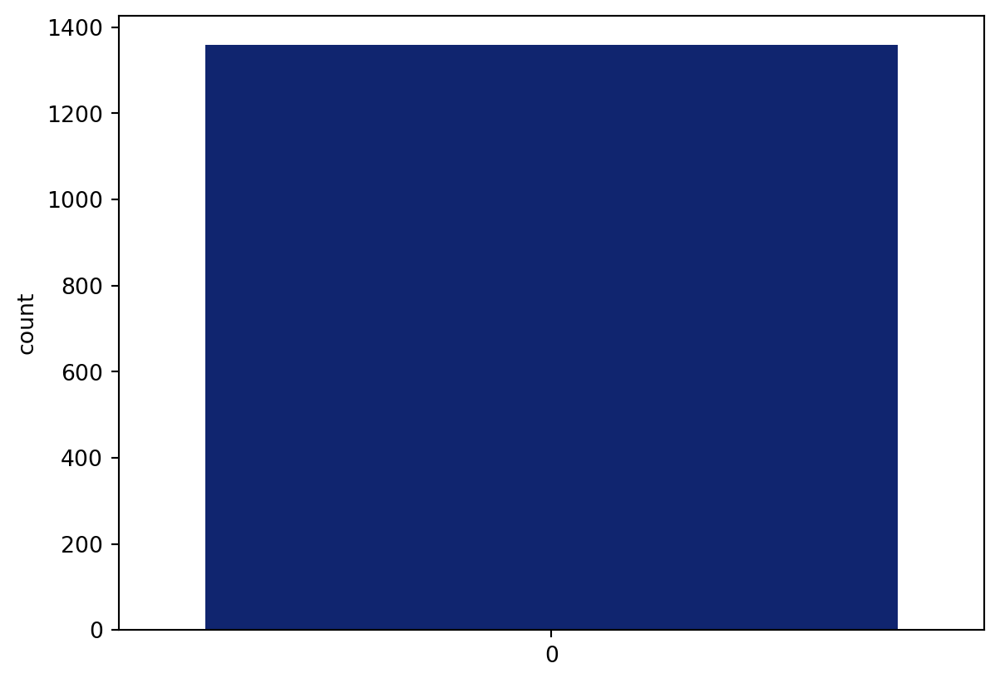
We shall upsample the training data later.
4 Baseline Evaluation Metric
To evaluate whether our models work well, we have to develop the baseline evaluation metric. We pose this question; if a person were to guess that the quality of all wines is bad (remember bad is the dominant class in the data), what would be their accuracy?
wine["quality"].value_counts()
1382 / (1382 + 217)0.8642901813633521[0]*1000
confusion_matrix(wine["quality"], [0] * len(wine))array([[1175, 0],
[ 184, 0]])classification_report(wine["quality"], [0] * len(wine))/home/karuitha/anaconda3/envs/py3108/lib/python3.10/site-packages/sklearn/metrics/_classification.py:1308: UndefinedMetricWarning:
Precision and F-score are ill-defined and being set to 0.0 in labels with no predicted samples. Use `zero_division` parameter to control this behavior.
/home/karuitha/anaconda3/envs/py3108/lib/python3.10/site-packages/sklearn/metrics/_classification.py:1308: UndefinedMetricWarning:
Precision and F-score are ill-defined and being set to 0.0 in labels with no predicted samples. Use `zero_division` parameter to control this behavior.
/home/karuitha/anaconda3/envs/py3108/lib/python3.10/site-packages/sklearn/metrics/_classification.py:1308: UndefinedMetricWarning:
Precision and F-score are ill-defined and being set to 0.0 in labels with no predicted samples. Use `zero_division` parameter to control this behavior.
' precision recall f1-score support\n\n 0 0.86 1.00 0.93 1175\n 1 0.00 0.00 0.00 184\n\n accuracy 0.86 1359\n macro avg 0.43 0.50 0.46 1359\nweighted avg 0.75 0.86 0.80 1359\n'In this case, the person would be 86% accurate. Hence, our models have to be more than 86% accurate. For the other scores like precision and recall, we ought to do better than this baseline.
5 Training and Testing Sets
In this section we will create a training set and a test set. We set aside 20% of the data for testing and use the remainder for testing.
x = wine.drop(columns = ["quality"])
y = wine["quality"]
x_train, x_test, y_train, y_test = train_test_split(x, y, test_size = 0.2)
x_train.head()/home/karuitha/anaconda3/envs/py3108/lib/python3.10/site-packages/IPython/core/formatters.py:345: FutureWarning:
In future versions `DataFrame.to_latex` is expected to utilise the base implementation of `Styler.to_latex` for formatting and rendering. The arguments signature may therefore change. It is recommended instead to use `DataFrame.style.to_latex` which also contains additional functionality.
| fixed acidity | volatile acidity | citric acid | residual sugar | chlorides | free sulfur dioxide | total sulfur dioxide | density | pH | sulphates | alcohol | |
|---|---|---|---|---|---|---|---|---|---|---|---|
| 926 | 9.4 | 0.240 | 0.33 | 2.3 | 0.061 | 52.0 | 73.0 | 0.99786 | 3.47 | 0.90 | 10.2 |
| 591 | 6.6 | 0.390 | 0.49 | 1.7 | 0.070 | 23.0 | 149.0 | 0.99220 | 3.12 | 0.50 | 11.5 |
| 393 | 8.4 | 0.665 | 0.61 | 2.0 | 0.112 | 13.0 | 95.0 | 0.99700 | 3.16 | 0.54 | 9.1 |
| 1238 | 8.1 | 0.730 | 0.00 | 2.5 | 0.081 | 12.0 | 24.0 | 0.99798 | 3.38 | 0.46 | 9.6 |
| 168 | 6.8 | 0.630 | 0.07 | 2.1 | 0.089 | 11.0 | 44.0 | 0.99530 | 3.47 | 0.55 | 10.4 |
6 Scaling the Data
The scale of the data could also affect the performance of the machine learning models. For instance, if one variable is in the millions (e.g. 5,233,150) while another is a fraction (e.g. 0.5), the models will likely pick the signal in the larger value more than the fraction. However, the fraction could also contain a valuable signal that is masked due to the scale.
sc = StandardScaler()
x_train = sc.fit_transform(x_train)
x_test = sc.transform(x_test)
x_train[:3]array([[ 0.61760958, -1.62973049, 0.28712203, -0.1472836 , -0.5380575 ,
3.60557336, 0.79407222, 0.62393094, 1.04676692, 1.37789118,
-0.1998463 ],
[-0.98929461, -0.79194893, 1.10307406, -0.63637916, -0.36640198,
0.73330607, 3.06864771, -2.46269727, -1.22358525, -0.95299271,
1.00383119],
[ 0.04371523, 0.74398394, 1.71503808, -0.39183138, 0.43465711,
-0.25713093, 1.45250197, 0.15493796, -0.96411643, -0.71990432,
-1.21834263]])Now our data is in the same scale.
7 Training the Models
In this section we train the three models in the following order:
- Support vector machines model.
- Random forest model.
- Neural network model.
7.1 Support Vector Machines
In this section, we train the support vector machines model.
clf = svm.SVC()
clf.fit(x_train, y_train)
clf_predictions = clf.predict(x_test)
confusion_matrix(y_test, clf_predictions)array([[222, 9],
[ 31, 10]])classification_report(y_test, clf_predictions)' precision recall f1-score support\n\n 0 0.88 0.96 0.92 231\n 1 0.53 0.24 0.33 41\n\n accuracy 0.85 272\n macro avg 0.70 0.60 0.63 272\nweighted avg 0.82 0.85 0.83 272\n'Again this model does better than the baseline model.
7.2 Random Forest Model
Next, we fit the random forest model with 1000 trees in the forest.
rf_model = RandomForestClassifier(n_estimators=1000)
rf_model.fit(x_train, y_train)RandomForestClassifier(n_estimators=1000)We examine the metrics of the model, that is how it performs in the testing set. We start by doing the prediction using the model and then evaluate the performance of the model on the testing set. In this case, we have an accuracy of 94%, sensitivity at 98%, and specificity at 96%. This is above the base metrics in section 4.
predictions_rfm = rf_model.predict(x_test)
classification_report(y_test, predictions_rfm)' precision recall f1-score support\n\n 0 0.89 0.95 0.92 231\n 1 0.58 0.37 0.45 41\n\n accuracy 0.86 272\n macro avg 0.74 0.66 0.69 272\nweighted avg 0.85 0.86 0.85 272\n'confusion_matrix(y_test, predictions_rfm)array([[220, 11],
[ 26, 15]])7.3 Neural Network Model
Neural nets work well with huge amounts of data, more so text, images and other unstructured data. The accuracy of 89% is marginally above the baseline metric of 86% in section 4.
mlp = MLPClassifier(hidden_layer_sizes = (11, 11, 11), max_iter = 1000)
mlp.fit(x_train, y_train)
mlp_predictions = mlp.predict(x_test)
confusion_matrix(y_test, mlp_predictions)/home/karuitha/anaconda3/envs/py3108/lib/python3.10/site-packages/sklearn/neural_network/_multilayer_perceptron.py:692: ConvergenceWarning:
Stochastic Optimizer: Maximum iterations (1000) reached and the optimization hasn't converged yet.
array([[208, 23],
[ 21, 20]])classification_report(y_test, mlp_predictions)' precision recall f1-score support\n\n 0 0.91 0.90 0.90 231\n 1 0.47 0.49 0.48 41\n\n accuracy 0.84 272\n macro avg 0.69 0.69 0.69 272\nweighted avg 0.84 0.84 0.84 272\n'8 Conclusion
In this analysis, we have trained the following classification models to predict the quality of red wine.
- Support vector machines model.
- Random forest model.
- Neural network model.
The baseline accuracy was 86% and the all the models seem to outperform this baseline accuracy. The random forest model does better than the neural network model and the support vector machine model. The models could be improved through hyperparameter tuning and the upsampling or downsampling of the underrepresented class in the dependent or outcome variable.
References
Hancock, J.T. and Khoshgoftaar, T.M. (2020) “Survey on categorical data for neural networks,” Journal of Big Data, 7(1), pp. 1–41.
Parmar, A., Katariya, R. and Patel, V. (2019) “A review on random forest: An ensemble classifier,” in International conference on intelligent data communication technologies and internet of things (ICICI) 2018. Springer, pp. 758–763.
Pisner, D.A. and Schnyer, D.M. (2020) “Support vector machine,” in Machine learning. Elsevier, pp. 101–121.
Footnotes
Note: The data is also available for white wine.See https://archive.ics.uci.edu/ml/datasets/wine+quality.↩︎